By Ishir Garg
In this project, we explore the power of diffusion models for image generation and manipulation. Diffusion models work by gradually adding noise to images (forward process) and learning to reverse this process (denoising). We implement sampling loops from scratch, use pre-trained DeepFloyd IF diffusion models, and create optical illusions including visual anagrams and hybrid images. The project demonstrates how these models can be used for tasks beyond simple generation, including inpainting, image-to-image translation, and creating images that change appearance under different transformations.
I generated prompt embeddings for several interesting text prompts using the Hugging Face clusters. Here are three of my favorite prompts and their generated images:
Seed: 42 (used throughout all subsequent parts)
Comparing results with lower num_inference_steps (20 vs 100), showing the trade-off between speed and quality:
DeepFloyd IF uses a two-stage pipeline (stage 1 generates a base image, stage 2 upsamples and refines). Here are the stage 2 outputs using 100 inference steps:
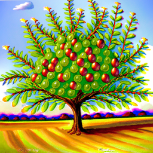
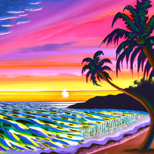
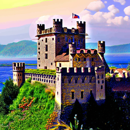
Stage 2 outputs using 20 inference steps for faster generation:
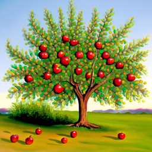
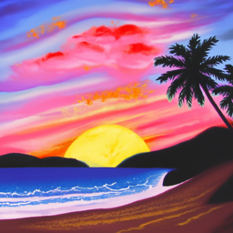
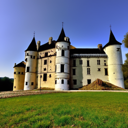
We can see that having more inference steps produces slightly more detailed and vibrant images, although the difference is arguably marginal. The 20 inference step images are actually quite good, demonstrating that there is a diminishing return of more inference steps relative to the incurred inference cost. Overall, the prompts adhere very well to the text descriptions.
The forward process adds noise to a clean image according to the diffusion equation:
$$q(x_t|x_0) = \mathcal{N}(x_t; \sqrt{\bar{\alpha}_t}x_0, (1-\bar{\alpha}_t)I)$$
which is equivalent to:
$$x_t = \sqrt{\bar{\alpha}_t}x_0 + \sqrt{1-\bar{\alpha}_t}\epsilon \text{ where } \epsilon \sim \mathcal{N}(0,1)$$
The forward process takes a clean image $x_0$ and adds
Gaussian noise scaled by $\bar{\alpha}_t$
at timestep $t$. As $t$ increases, more noise is added. The
alphas_cumprod array
contains $\bar{\alpha}_t$ values for all timesteps $t \in
[0, 999]$.
Here is the test image of the Campanile with noise added at timesteps $t \in [250, 500, 750]$:
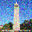
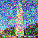
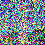
As expected, the images become progressively noisier with increasing timestep values.
Let's attempt to denoise the images using classical Gaussian blur filtering. This provides a baseline to compare against the learned denoising approach.
Kernel size: 5
Sigma: 2.0
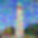
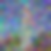
Classical Gaussian filtering struggles to remove the noise effectively, especially at higher noise levels. While most of the noise is gone, the results are very blurry and fail to recover fine details present in the original image.
Now we use the pre-trained DeepFloyd diffusion model UNet to denoise. The UNet estimates the noise in the image, which we can then remove to recover an approximation of the original image.
The UNet does a much better job than Gaussian blur at projecting the image onto the natural image manifold, though quality degrades with higher noise levels. This demonstrates the power of learned denoising compared to classical methods.
Diffusion models are designed to denoise iteratively. Instead of removing all noise in one step, we gradually remove noise over multiple steps, which significantly improves quality.
$$x_{t'} = \frac{\sqrt{\bar{\alpha}_{t'}}\beta_t}{1-\bar{\alpha}_t}x_0 + \frac{\sqrt{\alpha_t}(1-\bar{\alpha}_{t'})}{1-\bar{\alpha}_t}x_t + v_\sigma$$
where:
Instead of running 1000 denoising steps, we use a stride to skip steps:
Starting index i_start = 10 corresponds to timestep t = 690
A more detailed view of the denoising process showing intermediate steps:
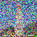
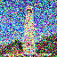
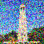
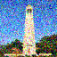
Iterative denoising produces significantly better results than one-step denoising, successfully recovering fine details and structure. It vastly outperforms Gaussian blur filtering.
We can use the iterative denoising process to generate images from scratch by starting with pure random noise (i_start=0) and denoising it completely. This demonstrates the generative capability of diffusion models.
Prompt used: "a high quality photo"
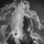
The generated images show reasonable quality but lack strong semantic content. Additionally some of the images seem to be complete garbage with virtually no recognizable components, even though they appear to have some structure at first glance. This will be improved with Classifier-Free Guidance in the next section.
Classifier-Free Guidance significantly improves generation quality by computing both conditional and unconditional noise estimates and extrapolating in the conditional direction.
$$\epsilon = \epsilon_u + \gamma(\epsilon_c - \epsilon_u)$$
where:
For $\gamma = 1$: standard conditional generation
For $\gamma > 1$: enhanced quality with reduced diversity
CFG Scale: $\gamma = 7$
The UNet is called twice per denoising step:
The final noise estimate is the weighted combination according to the CFG formula.
Prompt: "a high quality photo" with CFG scale = 7
The images generated with CFG show dramatically improved quality compared to the previous section, with clearer structure and more photorealistic appearance.
We can edit images by adding noise and then denoising. This projects images onto the natural image manifold while allowing control over the degree of modification through the noise level.
Lower noise levels (small i_start) → more faithful to
original
Higher noise levels (large i_start) → more creative edits
Prompt: "a high quality photo"
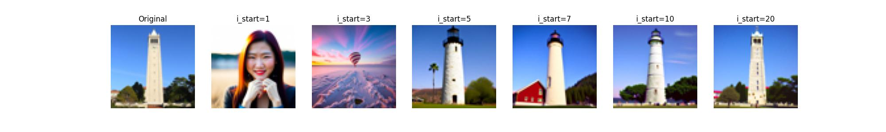
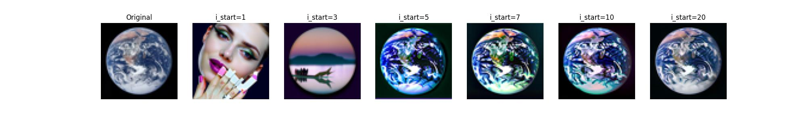
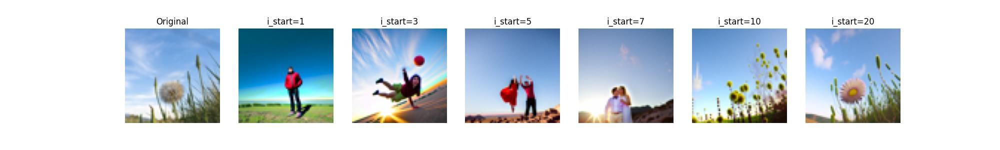
The SDEdit procedure works particularly well when starting with non-realistic images like sketches or drawings, projecting them onto the natural image manifold in creative ways.
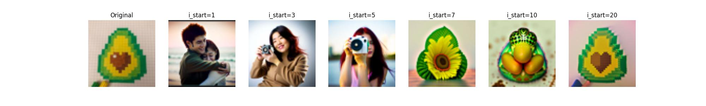
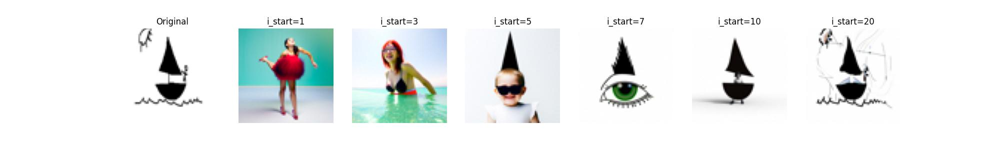
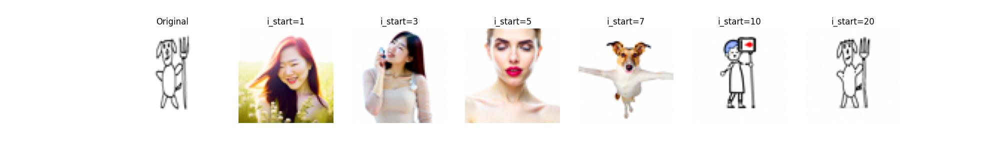
These results demonstrate how diffusion models can transform sketches and non-photorealistic images into realistic photographs while preserving the essential structure and composition.
Inpainting allows us to fill in masked regions of an image while preserving the unmasked areas. We achieve this by running the denoising loop but replacing unmasked regions at each step.
At each denoising step, after obtaining $x_{t'}$, we replace unmasked regions:
$$x_{t'} \leftarrow m \cdot x_{t'} + (1-m) \cdot \text{forward}(x_{\text{orig}}, t')$$
where:
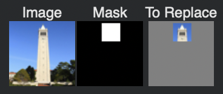
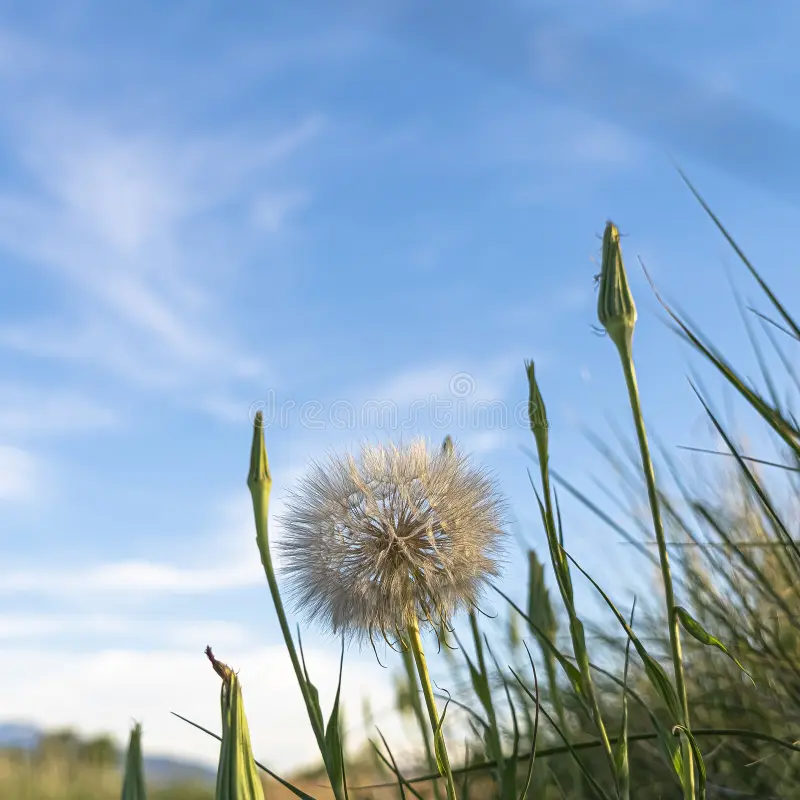
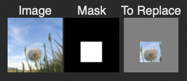
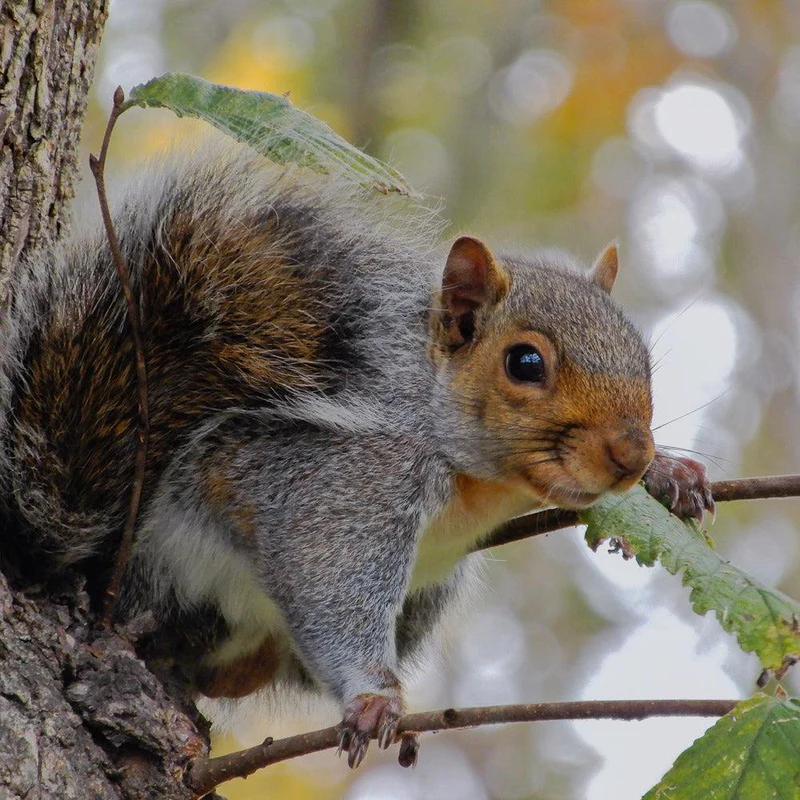
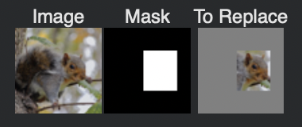
The inpainting results show how the diffusion model can seamlessly fill in missing regions while maintaining consistency with the surrounding context.
We can guide the SDEdit process with specific text prompts, combining projection onto the natural image manifold with semantic control from language.
Instead of using "a high quality photo", we use specific text prompts to guide the editing process. The prompt influences how the model interprets and modifies the image during denoising. Chosen prompt: a painting of a beach at sunset
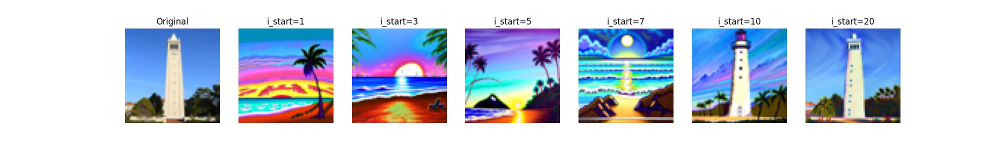
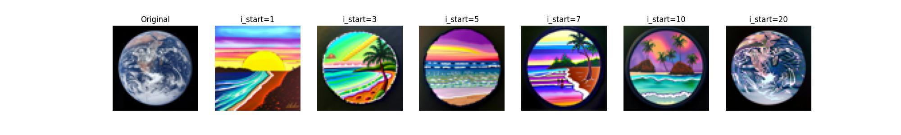
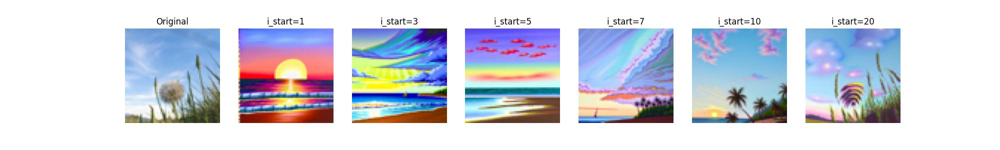
Text conditioning provides semantic control over the editing process, allowing us to steer the image toward specific styles or concepts while preserving the overall structure.
Visual anagrams are optical illusions created by combining noise estimates from two different prompts - one for the normal orientation and one for the flipped orientation. The result is an image that appears as one thing normally, and another thing when flipped.
At each denoising step:
The flip() operation flips the image upside down (180° rotation). By averaging noise estimates for both orientations, we create an image that satisfies both prompts.
Normal Prompt: "a medieval castle"
Flipped Prompt: "a photograph of a cat"
Normal Prompt: "an apple tree"
Flipped Prompt: "a rocket ship flying to Mars"
These visual anagrams demonstrate the model's ability to create coherent images that satisfy multiple constraints simultaneously, resulting in striking optical illusions.
Inspired by Project 2, we create hybrid images using diffusion models by combining low frequencies from one noise estimate with high frequencies from another.
At each denoising step:
The low-pass filter extracts low frequencies (visible from far), and the high-pass filter extracts high frequencies (visible from near). The result looks like one image up close and another from far away.
Gaussian Blur Kernel Size: 33
Sigma: 2
High-pass filter: $f_{\text{highpass}}(x) = x - f_{\text{lowpass}}(x)$
Low Frequency Prompt: "a painting of a beach at sunset"
High Frequency Prompt: "an apple tree"
Low Frequency Prompt: "a photograph of a cat"
High Frequency Prompt: "a large pile of money"
These hybrid images demonstrate how diffusion models can be used to create frequency-based optical illusions, where different semantic content emerges at different viewing distances.
This project successfully demonstrates the versatility and power of diffusion models beyond simple image generation:
The project reveals that diffusion models are not just generation tools, but flexible frameworks for image manipulation, restoration, and creating visual illusions. The ability to compose noise estimates in creative ways opens up numerous possibilities for controllable image synthesis.